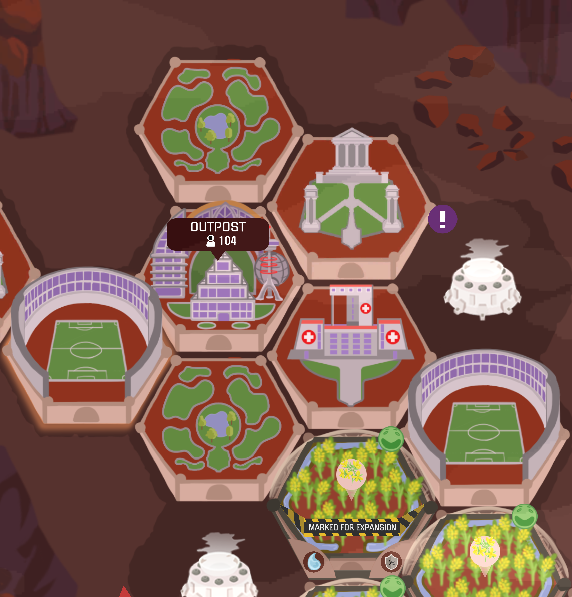
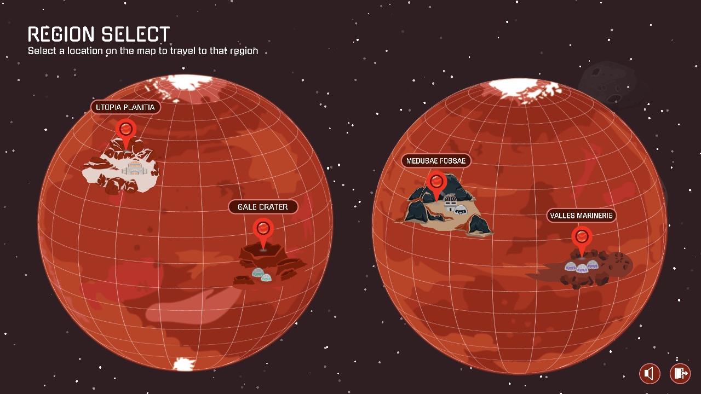
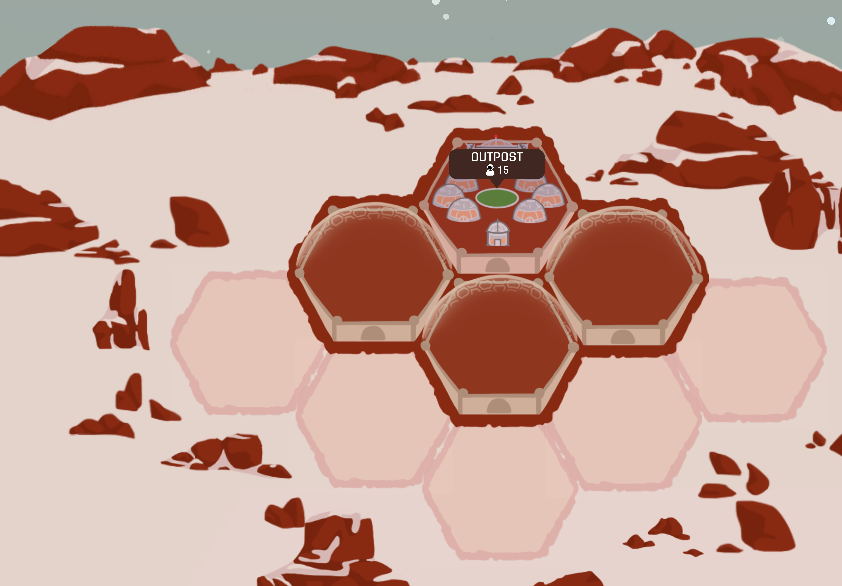
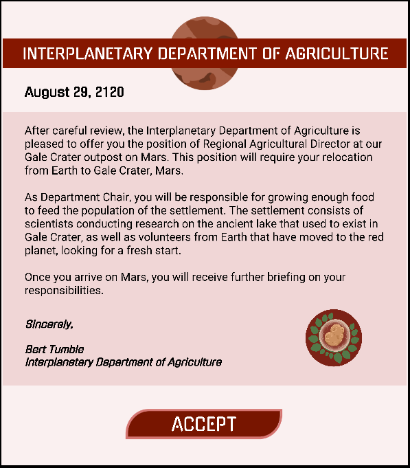
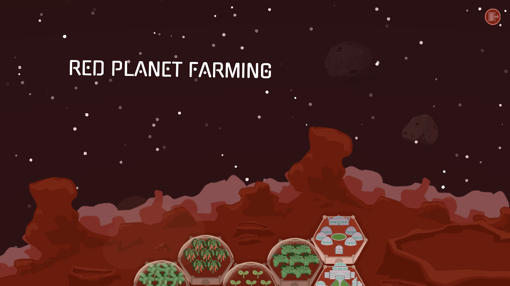

|
Today we’re having a look at a quaint little game called ‘Red Planet Farming’.
What appears to be a typical free to play game unveils to have quite a fun and well thought out system of mechanics.
You start the game to your first colony on our red neighbor, tasked with growing the crops for the fledgling colony as it conducts research missions and shelters more colonists.
With each turn and crop cycle more people arrive until you’ve got your own martian city!
Kind of.
Being in charge of agriculture you cannot control the city itself but it’s basically your city..
With this out of the way you and your definitely hard working advisor, Marvin deMartini, set out to grow some crops!
Photos used in the review are severely downsized, legibility of photos not representative of real gameplay.
In addition this review is written both as a game review and a note to the developer(s) themselves, if you’re a standard reader please forgive the tangents the review goes on.
|
|
This may be the worse part of the review by far, but even here I can’t give the game too much flak.
Graphically the game is.. Less than impressive.
Looking like a 2008 flash game the looks leave something to be desired.
This being said what’s there is definitely fitting for the setting and aside from being unimpressive they didn’t hinder my ability to be immersed in the game in the slightest.
Starting with the U/I we find ourselves with a very intuitive approach.
All the important info is easy to find and all the plants, buildings, and upgrades are easy to search for and identify.
Full credit to the design of this, I wouldn’t change the layout one bit.
The game itself does leave much to be designed though.
As stated the visuals are easily the weakest aspect of this game and while not offensive (especially for the price) they don’t leave anyone envious.
The plants and buildings like solar panels have a heavy coating of anti-aliasing on them, making them just look blurry instead of smooth.
I feel given the drawn aesthetic of the game having sharp lines would only serve to help the visuals.
As for graphical overhaul in itself a pixel art approach wouldn’t be awful given the space nature of the game.
Making sure to keep the models not over-textured might suit the game very nicely.
However I’m biased towards some well implemented pixel art.
The various faces in the game are decent enough and definitely the best done portion of the visuals in my opinion.
While they look like impression sketches they do the job well enough.
My biggest complaint here would be a lack of expressions for the advisor, which contributes to a robotic feeling from him.
Other tweaks needed even without a graphical overhaul are to the font used.
The game reads easy enough however certain characters have dot’s used where a line would be.
This makes it kind of difficult to read.
Adding a thin line connecting the dot to the letter would probably help a fair bit.
In addition to this the government letters given use a very plain and standard font, which cheapens the feeling of the game.
I feel the developer should continue using the custom font throughout the game to eliminate this issue.
Also the effect done by the water towers makes them look more like a radio tower.
I get they’re trying to give a sprinkler effect or something of that nature but it doesn’t achieve that goal very well.
|

|
|

|
I’ve given enough of a hard time about graphics, especially considering they aren’t even that big a deal.
The game itself was a real treat and one I didn’t expect out of (and I cannot stress this enough) a free game.
You start each level with two crops, their exact specifications varying on the mission.
From this it’s your job to plant them and diversify them enough so that you can both grow enough food for your colony and make enough money to do well next season.
After the city grows enough you get to choose more crops to diversify even further.
But wait!
There’s a whole host of other things the game throws at you!
As the game progresses and your city grows it expands onto the hexes once used for farming, keeping you on your toes and careful not to over grow the population without a way to keep up.
In addition sometimes wealthier citizens well create mansions outside of city bounds which makes for interest planning decisions as the game plays out.
Doesn’t sound like enough of a strategic game yet?
Well there’s more!
Each time you expand to new growing areas the price to do so increases.
In addition when you fail to grow enough food by a considerable margin you cause a famine, which leads to a graveyard being constructed on your already ever precious land.
And to really finish you off even the planet itself wants to drive you off.
Environmental hazards leave even your most tended crops feeling exposed to danger.
Okay okay, I know what you’re thinking.
‘That sounds like a handful to keep up with’, and it is.
Luckily there are enough positive mechanics in the game to help you keep up.
Those researchers mentioned previously are fascinated by the crops growing here, and if you grow the right crops to help their research they’ll throw a bit of grant money your way.
There are also crops that keep coming back without you even planting them!
It’s basically free money!.. Assuming you keep them happy that is.
The cost savings don’t end there either!
Crazy right?!
When plotting out your farms having adjacent fields with the same upgrades makes the upgrades cost less to do.
This not only makes keeping a tidy board important but also saves you those precious few cents.
Between the three of these there’s a nice amount of cash injection and cost savings to help stave off the impending famines, leaving the game feel pretty well balanced.
Oh my goodness would you look at that?
The good gameplay keeps on coming.
As of writing there are four different regions of the planet, each one feeling unique and different than the rest.
New crops.
New hazards.
New map layout.
New challenges.
I was able to beat the game in a couple hours (forgot to keep track) and never felt like the game was getting stale for a second.
Other features I found well thought out and welcome include:
Crops you plant to much of going out of stock.
This makes diverse crops a must and makes choosing new crops as you progress important.
When the city expands it doesn’t do it in a predictable pattern.
This keeps the player constantly revising plans and finding new solutions to tile issues as the game progresses.
The buildings between regions change.
Which helps keep the game fresh and makes the player need to experiment more with each building set.
THE GAME HAS AN UNDO BUTTON, THANK CHRIST.
The number of times this has saved my bacon I literally cannot count.
It lets the player experiment to find the best way to play each turn before committing to any given set of choices and made the game a lot more enjoyable.
As much as I enjoyed playing there were minor issues that cropped up.
Firstly, when the city takes over your tiles it would be nice if the cost of buying a tile when down appropriately.
This isn’t strictly necessary but would make the game slightly more forgiving in the late stages.
You could also make it so that the cost is based on distance to the nearest city spot in addition to number of spots already bought.
This would make mansions not strictly a bad thing as they would help with expansion.
The next issue I had was needing a way to lock down tiles against city expansion.
The city constantly expanding, while nice, did make water towers and the like feel useless.
I’d build a water tower and find that all the tiles are city before too long.
Being able to spend money as some sort of deal with the city to not expand onto tiles would give players a small feeling of control against city growth and address some of the negative reviews on the steam page.
Continuing on the only source of any frustration I had was not being able to deselect a crop/building/upgrade easily after I was done placing them.
I ended up resorting to just clicking a different tab than what I was using to ensure I didn’t accidentally place something I didn’t want, this for whatever reason seems to deselect items.
Ideally right-clicking or something similar would deselect.
In addition I’d also like if it closed the buying menu after deselecting something.
It doesn’t make the game any less playable it just makes the screen feel crowded longer than it needs to.
Bringing us to our second to last tweaks: being able to zoom out would help the feeling of the game a lot.
I found later in the game I seem far too zoomed in to effectively manage everything without panning all over the place.
Lastly, please add an endless mode.
While not really a complaint or at least not a bad one to have I found myself enjoy the game quite a bit as between the gameplay and music it can be quite relaxing.
I think having an endless mode with a random map would be bring the game to the next level.
I’d like a big map just to go nuts and see how long I can keep things going, while you can keep playing after each mission it just isn't the same.
|
|
Put simply the game’s audio is everything it needs to be and nothing it doesn’t.
The music is fitting and relaxing, and in my opinion never got repetitive.
The audio hovering over options was exactly what you’d expect.
Furthermore all the placement sounds were perfectly understandable as to what was happening.
The undo button even makes a delightful sound, which turns fixing your mistakes from a frustrating experience to just part of the relaxing time.
Seeing as to how I’m not an audiophile I don’t have much else to say, I couldn’t come up with a thing I’d add or change.
|

|
|

|
Story wise we find ourselves in charge of the agriculture of the new colonies establishing themselves on the red planet.
Our advisor tells us the last person in charge sucked so bad enough people died to have him fired, good thing you won’t do the same.
Right?
While not particularly inspired or having a chair gripping narrative frankly it doesn’t need to be.
I came to the game wanting to do farming on a red planet and that’s exactly what it delivers, it doesn’t give me a complicated narrative and I wouldn’t want it to.
All a complex narrative would achieve would be to take away from the otherwise simple missions of the game, which would make it less relaxing and enjoyable.
All this being said there is still room for improvement.
Firstly, I left the game feeling 70% convinced Marvin is a robot doing a really good job at trying to act human.
He lacks a sense of personality most of the time and feels too much like a tutor bot.
The writing for him is decent but could use some work.
Another issue I have is with the universe of the game.
We’re led to believe each pop is exactly one person, which is fine but why are we building stadiums and schools for less than 50 people?
I feel if these are buildings worth constructing each population point should represent x people instead of a literal translation.
This makes the number of stadiums and the like more appropriate.
I’d also like to see a more diverse set of buildings take shape.
Things like shopping districts, malls, etc. would make the planet feel more populated and help the sheer volume of farming being done make more sense.
I don’t see why 30 people need like eight large fields to have enough to eat.
|
|
So all things being said is this game worth a play?
Assuming you enjoy strategy games, space themed games, or farming games absolutely.
I had a great time playing and would love to see it get continued development.
For a free game especially the game really is a treat.
As a note to the developer themselves: you could probably charge at least 2$ and still get great reviews.
The fact you aren’t charging at all is greatly undervaluing the thought and time put into the game.
Modifying the graphics, adding more quests or an endless mode, and doing some tweaking would make the game really stand out.
I feel at that point you could charge 5$+ and still get golden reviews on steam, but I’m no expert here.
|

|